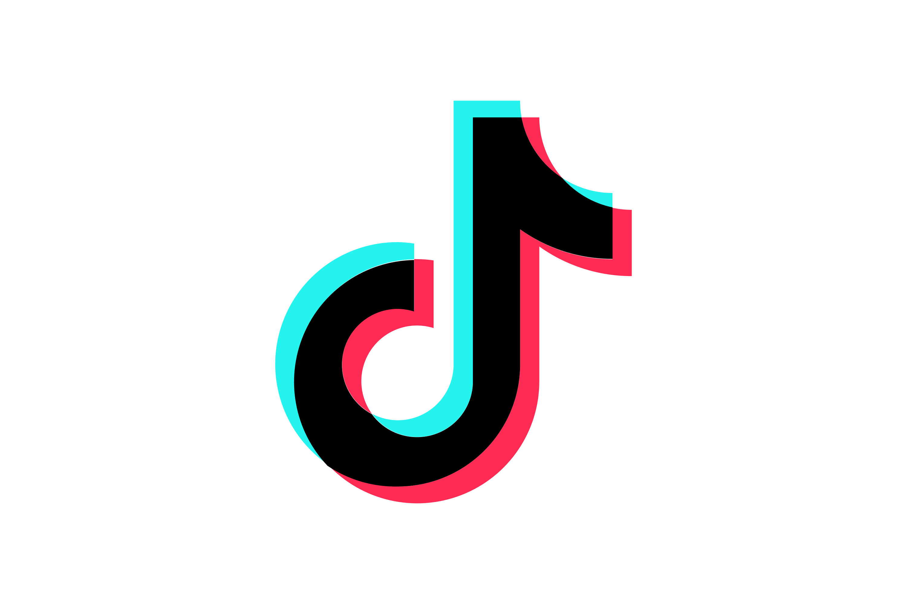

|  | |||
|---|---|---|---|
| Twitch | YouTube | TikTok | instagramm |
| I stream on here... Atleast once per weekJust don't ask me when XD |
In theory, content about stuff that interests me… I just need to find the motivation to cut it.Oh, and VODs. |
Ehm.. Under construction... Please enter with caution |
A dusty artifact I didn’t really have the motivation to do much there. |